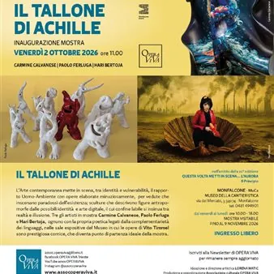

da ven 2 ott a lun 9 nov · dalle 11:00
“Il tallone di Achille” in mostra al MuCa
Monfalcone aggiunge un nuovo appuntamento al suo calendario culturale d’autunno: le sale del MuCa - Museo della Cantieristica di Monfalcone ospitano, a partire da venerdì 2 ottobre 2026, “Il tallone di Achille”, esposizione che mette insieme ricerca visiva, materia e riflessione…
 Indicazioni
Indicazioni
- Costi e prenotazioni
- Costo non indicato · Prenotazione non indicata
- Programma
- Programma da verificare. Apri la fonte ufficiale per orari e possibili aggiornamenti.
- In caso di maltempo
- Nessuna indicazione specifica pubblicata.
- Note
- Acquisito automaticamente dalla fonte.
L’EVENTO
Descrizione completa
Monfalcone aggiunge un nuovo appuntamento al suo calendario culturale d’autunno: le sale del MuCa - Museo della Cantieristica di Monfalcone ospitano, a partire da venerdì 2 ottobre 2026, “Il tallone di Achille”, esposizione che mette insieme ricerca visiva, materia e riflessione sul rapporto tra persona e ambiente.
La tappa al MuCa, la cui inaugurazione è prevista per venerdì 2 ottobre 2026 alle ore 11:00, s'inserisce nell'ambito della rassegna “Questa Volta metti in scena...", promossa da Opera Viva Associazione culturale: l'iniziativa, giunta quest'anno alla 22ª edizione, declina il concetto di Aurora, fenomeno luminoso che rappresenta l’inizio del nuovo giorno e metafora universale di rinascita, attraverso una narrazione inedita della società nel suo evolversi, nel binomio Uomo-Ambiente. Diversi i campi indagati nel progetto, che nel sottotitolo di quest'edizione, “il Principio”, chiama in causa la Scienza, fenomeno naturale che impatta, nella sua bellezza e con la sua energia, sulla Terra, l’Arte, in cui identità e vulnerabilità dell’Uomo, nei paradossi del quotidiano, dialogano nelle opere scultoree, pittoriche e digitali e la Fotografia, attraverso la quale gli artisti rappresentano e si interrogano sul nostro tempo.
Ad essere esposte, le opere di Carmine Calvanese, Paolo Ferluga e Hari Bertoja, arricchite dai lavori di Vito Timmel, che accompagnano il visitatore come traccia storica e punto di confronto.
Il risultato è un insieme di vedute minuziosamente costruite, presenze antropomorfe e lavori digitali in cui il limite tra vero e artificiale resta volutamente mobile e che genera nell'osservatore una profonda riflessione sul rapporto tra umanità e ambiente, attraversata da contrasti, paradossi e domande sulla nostra identità.
L'esposizione è visitabile fino al 9 novembre 2026 negli orari di apertura del MuCa, dal venerdì al lunedì 10:00-18:00.
Ingresso gratuito.
Per maggiori informazioni:
https://assocoperaviva.it/
IL PROGRAMMA
Programma e orari
Appuntamenti raccolti dalle fonti elencate. Dove manca un orario, non è ancora disponibile in questa scheda.
Programma pubblicato
- Dal 2026-10-02 al 2026-11-09
INFORMAZIONI UTILI
Prima di partire
- Controllare la fonte prima di partire.
ORGANIZZAZIONE